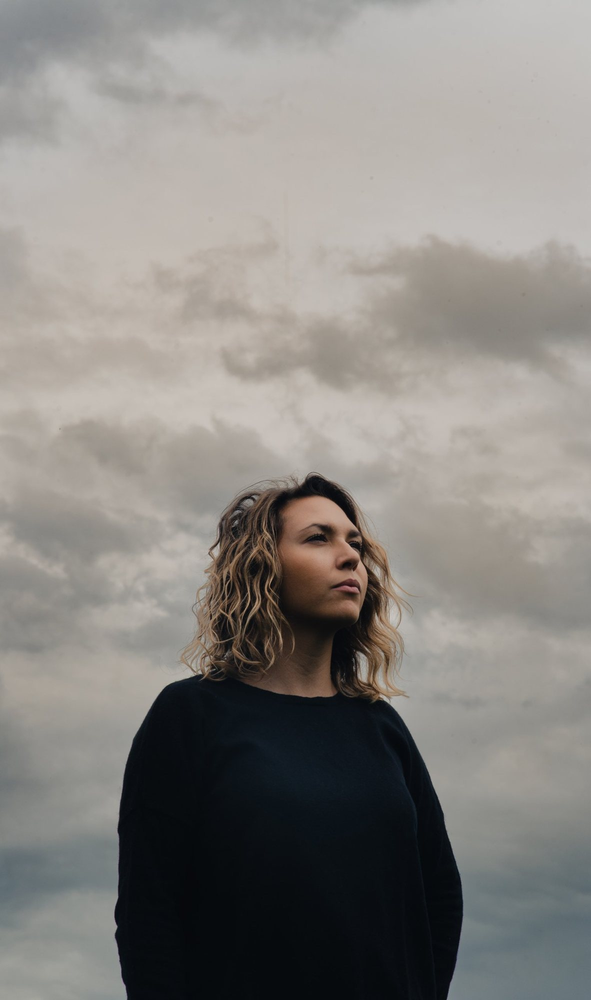
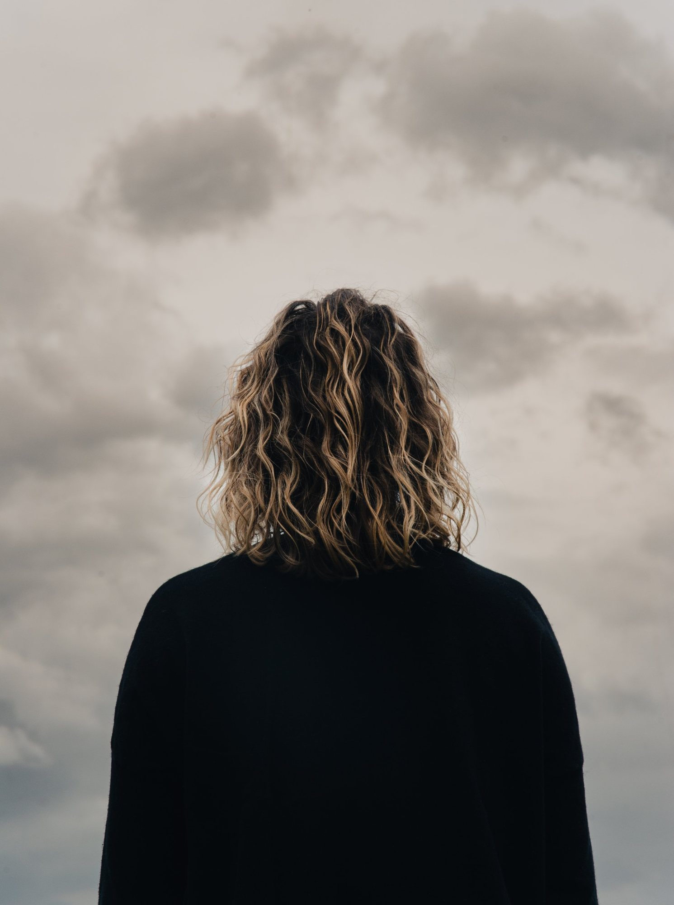
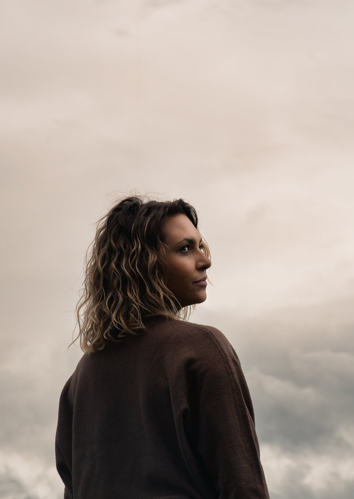
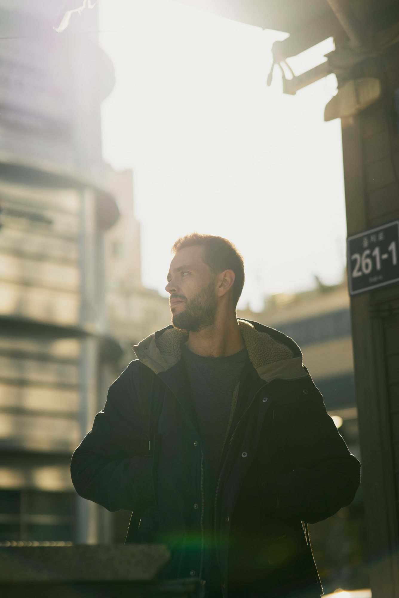
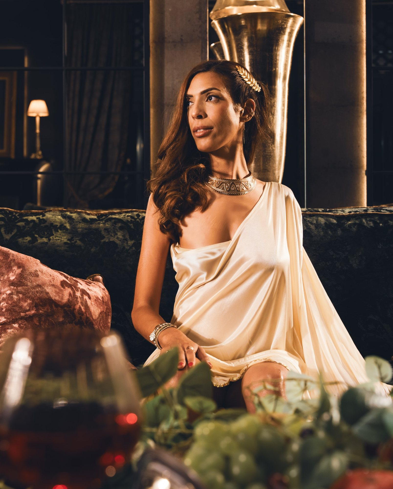
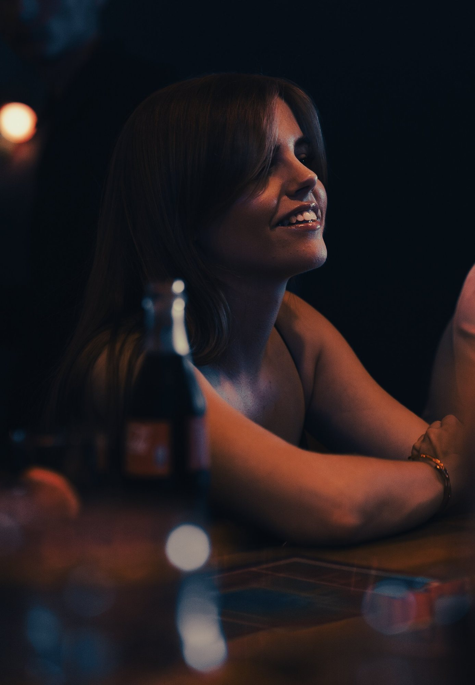
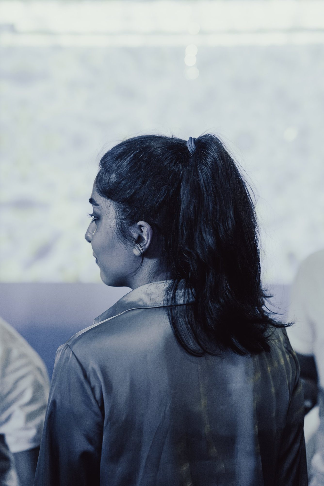
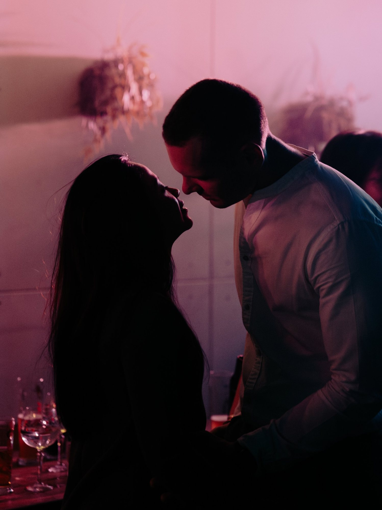

Portrait Photographe | Strasbourg, Alsace Photographe portrait et shooting photo à Strasbourg et en Alsace
Des portraits
qui ont du cinéma : photographe portrait à Strasbourg
Un bon portrait ne montre pas seulement un visage : il laisse deviner une histoire. Mon rêve, c’est de vous donner des images qui ressemblent à un plan de film, avec la lumière et l’émotion qui vont avec.
Portraits, books, photos LinkedIn, portraits d’entreprise et photos d’équipes : je m’adapte à votre projet, à vos envies, et aussi aux modèles et aux comédiens qui souhaitent construire leur book.
J’aime le clair-obscur, la retouche soignée, et cette petite touche cinéma que je cherche dans chaque image.
Une direction artistique,
rien que pour vous : photographe portrait et shooting en extérieur en Alsace
01
Une idée commune
Nous cherchons ensemble la direction artistique. Je vous propose des planches d’ambiance, puis nous construisons le décor : un bar, un restaurant, un lieu choisi, chez moi ou chez vous.
02
Deux à trois heures
Une séance dure en général deux à trois heures, essentiellement en extérieur, car je n’ai pas de studio. Pour les projets plus ambitieux, une architecte d’intérieur peut m’aider à créer des décors.
03
Des images retouchées
Vous recevez en général une dizaine de photos, davantage selon le budget, avec une retouche soignée pour leur donner cette touche de cinéma.
Je travaille sur devis, partout en Alsace, sans frais de déplacement.
Portraits & shootings à Strasbourg et en Alsace












Questions fréquentes : photographe portrait à Strasbourg
Quels types de shootings réalisez-vous ?
Beaucoup de portraits, des books, des photos LinkedIn, et des books pour les modèles et les comédiens. Je réalise aussi des portraits d’entreprise et des photos d’équipes.
Où se déroule le shooting ?
Essentiellement en extérieur : je n’ai pas de studio. Nous pouvons aussi shooter dans un bar, un restaurant, un lieu choisi ensemble, chez moi ou chez vous.
Comment construisez-vous l’univers des photos ?
Je travaille avec vous pour trouver une direction artistique. Je vous propose des planches d’ambiance, puis nous construisons ensemble le décor. Pour les projets plus ambitieux, une architecte d’intérieur avec qui je travaille peut m’aider à créer les décors.
Quel est votre style ?
J’aime le clair-obscur et je cherche toujours à donner à mes photos une touche de cinéma. Je m’adapte bien sûr à ce que vous voulez : il y a toujours un travail de retouche.
Combien de temps dure une séance, et combien de photos vais-je recevoir ?
Une séance dure en général deux à trois heures. Je livre en général une dizaine de photos, davantage selon le budget.
Combien coûte une prestation et comment réserver ?
Je travaille sur devis, en fonction de votre projet. Une fois le devis signé, un acompte de 30 % confirme la réservation. Écrivez-moi sans attendre, il n’y a pas de délai minimum.
Intervenez-vous dans toute l’Alsace ?
Oui, j’interviens dans toute l’Alsace sans frais de déplacement. En dehors de l’Alsace, des frais de déplacement viennent s’ajouter.
Parlons de votre portrait : devis photographe portrait à Strasbourg
Dites-moi ce que vous imaginez : un portrait, un book, des photos pour votre équipe. Je vous réponds rapidement, avec une proposition adaptée.